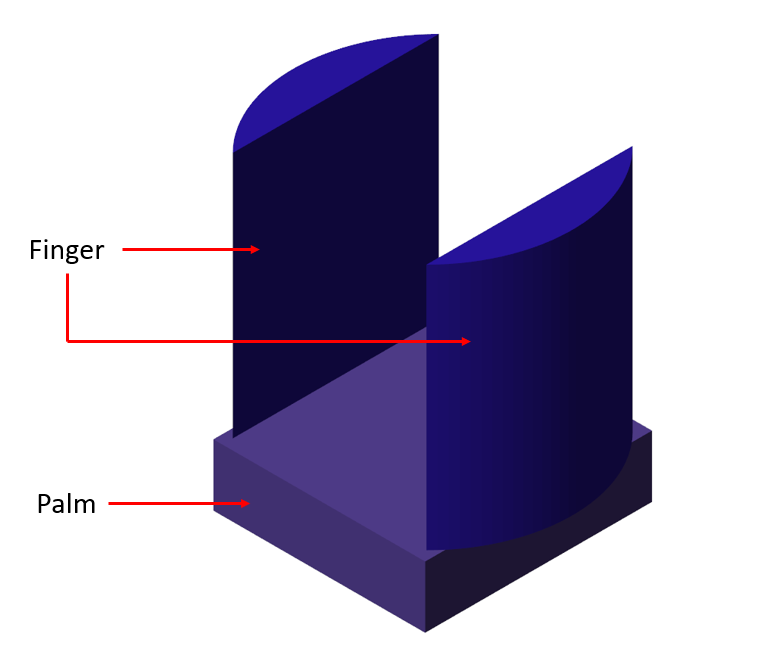
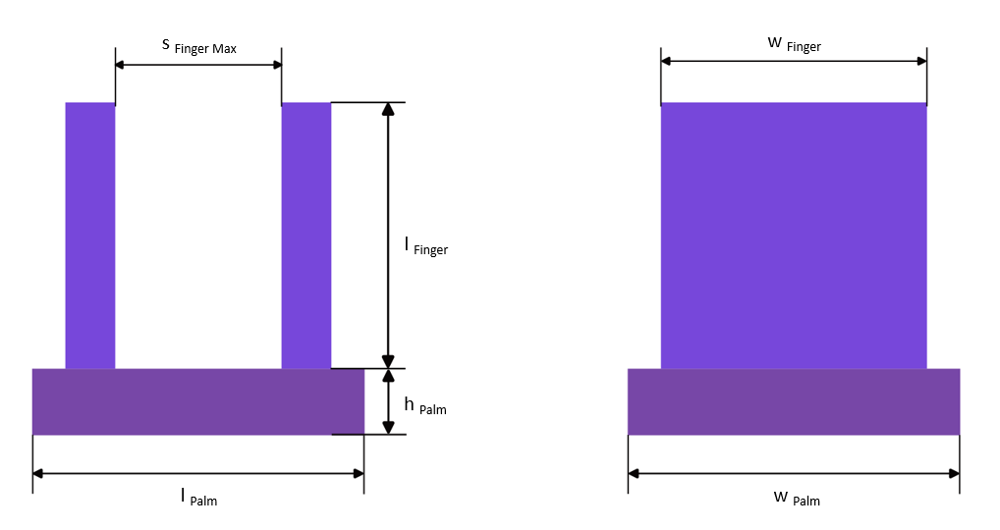
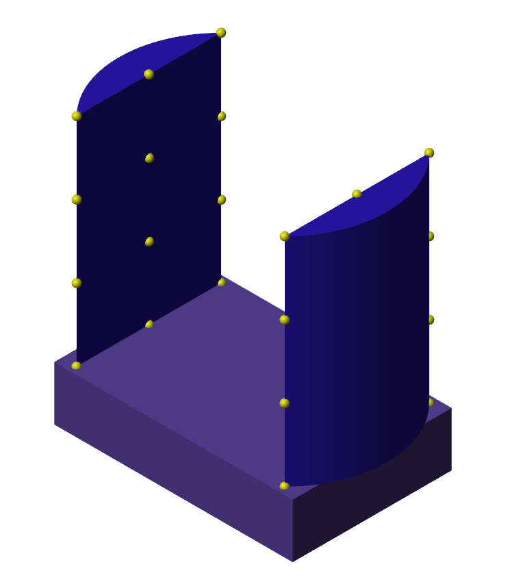
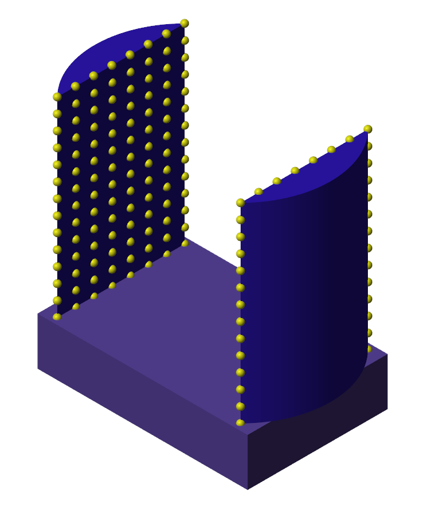

Robot Arm Two Finger Gripper
Robot arm Two Finger Gripper or
simply, Two Finger Gripper block models a device that enables a manipulator
robot to pick up, hold and place objects. A two finger gripper is a
rigid body that consists of a palm, and two fingers. Each finger is
connected with the palm using a Prismatic Joint.

Ports
B - Base Frame
Body frame located at the centroid of the bottom surface of the palm. Use this frame to connect other components, such as links.
A - Actuation
Physical signal input port that accepts the actuation force for the joint primitive. The signal provides the value of the force that applies on both the base and follower frames of the Prismatic joint.
G - Geometry
Geometry that represents the solid. Connect this port to a Spatial Contact Force block to model contacts on the solid.
Parameters
Finger length
Length of each
finger in the direction perpendicular to the surface of the palm to which
the fingers, Finger1 and Finger2 are connected. This surface of the palm is called the top surface.
The height of the palm of the two finger gripper depends on the Finger length.
The parameter is calculated as following:
h Palm = l Finger/4
where,
h Palm is the distance between the top surface and the bottom surface of the palm.
Finger width
Distance between
two edges of the inner gripping surface of each finger, which are
perpendicular to the top surface of the palm.
The width of the palm of the two finger gripper depends on the Finger width.
The parameter is calculated as following:
w Palm = 1.1*w Finger
where,
w Palm is the distance between the two surfaces of the palm located along the finger width.
Finger maximum opening
Maximum
distance between the inner gripping surfaces of two fingers, Finger1 and Finger2.
The length of the palm of the two finger gripper depends on the Finger maximum opening.
The parameter is calculated as following:
l Palm = 1.1*s Finger Max
where,
l Palm is the distance between the two surfaces of the palm located along the finger motion.
Below is the schematic of a two finger gripper showing front and side views.

Gripper density
Material density of the two finger gripper, specified as a positive scalar. The unit is kg/m^3.
Mass
Total mass of the two finger gripper, specified as a positive scalar. The unit is kg. Mass is distributed to the Gripper palm only and the mass of the fingers, Finger1 and Finger2 is assumed to be zero.
Center of mass
[x y z] coordinates of the center of mass of the gripper relative to the body frame located at the centroid of the bottom surface of the Gripper palm.
Moments of inertia
Three-element vector with the [Ixx Iyy Izz]
moments of inertia specified relative to a frame with origin at the
center of mass and axes parallel to the body frame
located at the centroid of the bottom surface of the Gripper palm.
The moments of inertia are the diagonal elements of the inertia tensor
where:
Ixx = ∫m (y2 + z2)dm
Iyy = ∫m (x2 + z2)dm
Izz = ∫m (x2 + y2)dm
Products of inertia
Three-element vector with the [Iyz Izx Ixy]
products of inertia specified relative to a frame with origin at the
center of mass and axes parallel to the body frame
located at the centroid of the bottom surface of the Gripper palm.
The products of inertia are the off-diagonal elements of the inertia tensor
where:
Iyz = - ∫m yz dm
Izx = - ∫m zx dm
Ixy = - ∫m xy dm
Finger color
Color of the graphic of fingers, Finger1 and Finger2, under direct white light, specified as an [R G B] or [R G B A] vector on a 0–1 scale. An optional fourth element (A) specifies the color opacity on a scale of 0–1. Omitting the opacity element is equivalent to specifying a value of 1.
Finger point cloud density
Number of contact points per unit area
of the inner gripping surface of each finger. To generate a sparse
point cloud on the finger gripping surface, set
Finger point cloud density to 4 or lower. A sparse point
cloud may not establish accurate contact, but the simulation will be fast.

To generate a dense point cloud, set Finger point cloud density
to 6 or higher. A dense point cloud enables accurate
contact establishment, but the simulation will slow down.

Copyright 2023 - 2024 The MathWorks, Inc.